Descrição do Sistema Geral
Descrição da Função A tensão operacional do módulo PTM (Power Train Manager) é de 24V. A alimentação de tensão é fornecida pela central elétrica.
O Power Train Manager é protegido por 2 fusíveis:
1 - Linha 30. 2 - Linha 15. 3 - Ponto de massa na coluna direita. 4 - PTM (Power Train Manager). Exemplo da central elétrica do Constellation, figura abaixo.
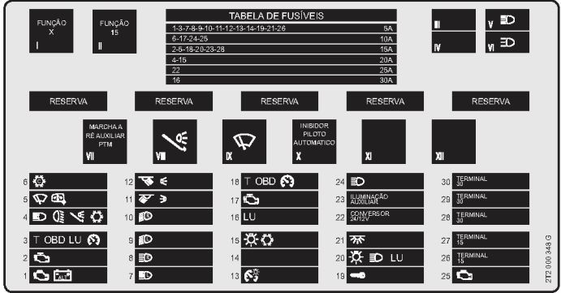 Detalhes da PTM (Power Train Manager) Lado superior (1)
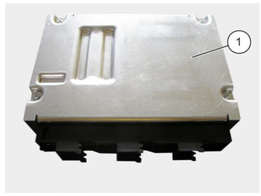
Não devem ser fixados etiquetas adesivas na superfície de refrigeração (troca de calor) Lado inferior com orifícios de drenagem
 Funções – Arrefecimento do motor (nível do líquido de arrefecimento) – Aquecimento do motor – Controle de rotação intermediária – Tomadas de força – Armazenamento de dados – Dados de manutenção – Etc. Através da rede de dados CAN conjunto propulsor (P-CAN) o Power Train Manager está interligado com os módulos de controle para freios, transmissão, suspensão pneumática, retarder, computador central de bordo, etc. A comunicação entre o Power Train Manager e o módulo EDC7 é realizada através do bus de dados CAN motor (M-CAN). A comunicação entre Power Train Manager e volante multifunção de direção, interruptor de faixa de condução ou interruptor da coluna de direção é realizada através do bus de dados LIN. Diversos interruptores, sensores e atuadores estão interligados com o Power Train Manager para mais funções. O Power Train Manager (A1124) possui programação EOL (End Of Line). Além dos registros de parâmetros do fabricante do sistema, no fim da linha de produção ainda são registrados outros parâmetros específicos para o veículo pelo fabricante do veículo. Os registros de parâmetros podem ser verificados e, se necessário, modificados com MCO-08. Os códigos de diagnose armazenados na memória de diagnose do Power Train Manager são lidos através da tomada de diagnose por meio de MCO-08. No lado inferior do alojamento do Power Train Manager encontram-se 10 aberturas para drenagem de água condensada. Pelo menos uma abertura de drenagem precisa estar aberta para que a água condensada seja drenada. Por este motivo, o Power Train Manager está instalado na posição horizontal. 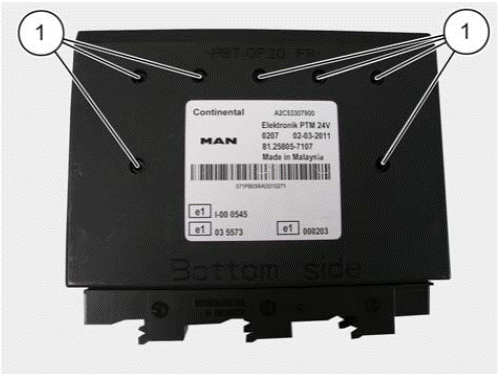 (1) Aberturas de drenagem
Disposição dos pinos dos plugues
 Plugue de alimentação (Ligação X)
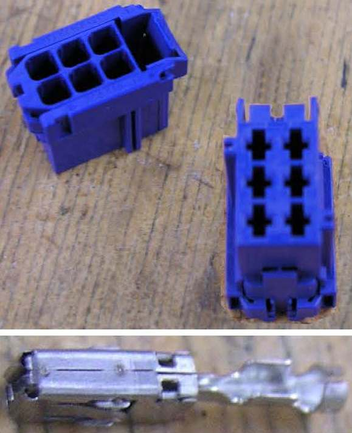
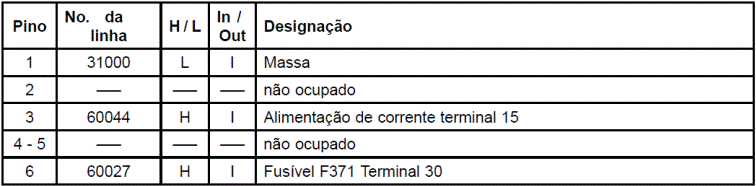 H significa high e L significa low Plugue A (Ligação A)  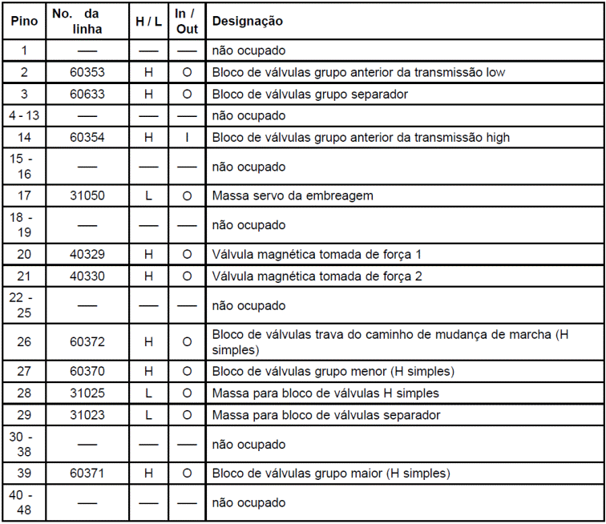 H significa high e L significa low Plugue B (Ligação B)  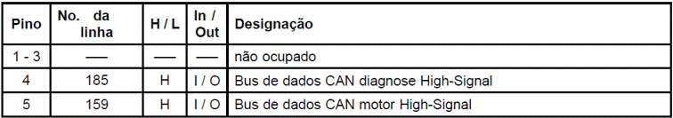
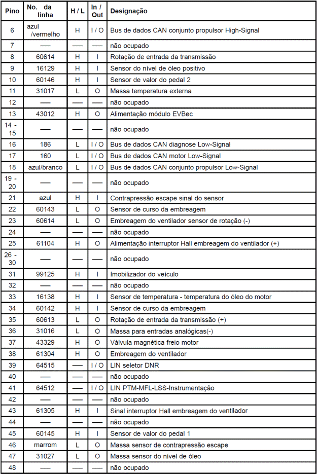 H significa high e L significa low Plugue C 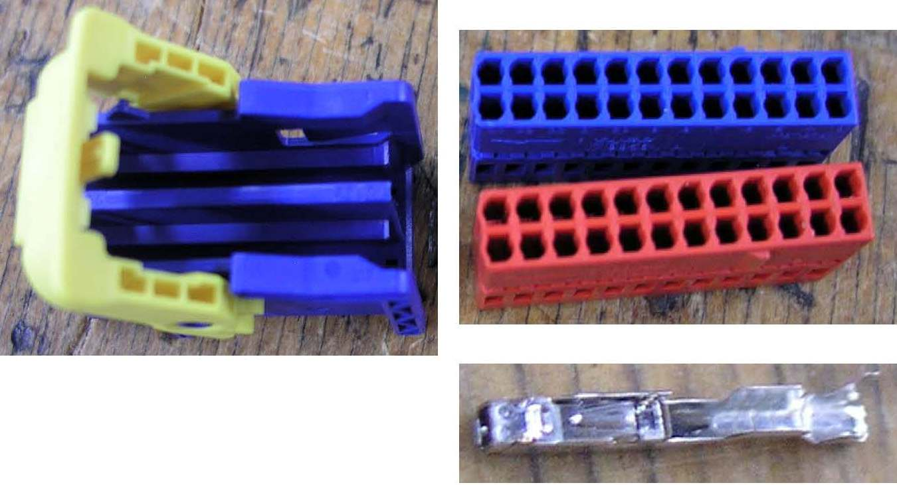 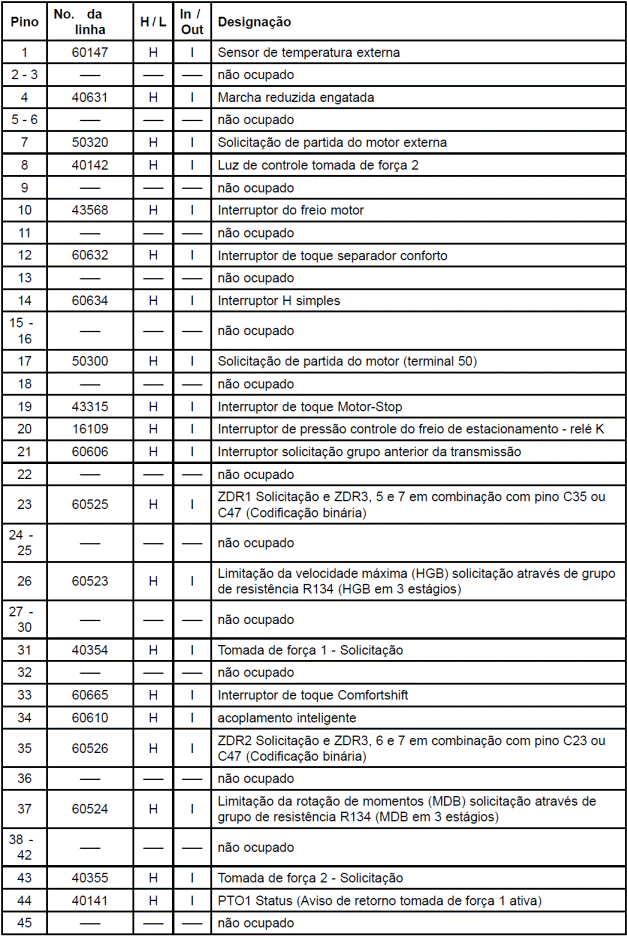
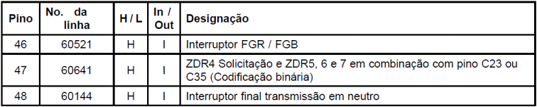
Dados técnicos: 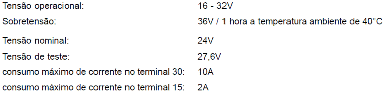
Conjunto de pedais O conjunto de pedais é uma unidade pré-montada e testada que leva na sua placa base: – o pedal do acelerador (A410) com sensores sem contato, – o pedal do freio com a válvula do freio de serviço, – o pedal da embreagem com o cilindro sensor da embreagem / servo da embreagem. A unidade completa é inserida pela frente na parede frontal do veículo e a unidade fecha a parede frontal. As conexões das linhas hidráulicas no cilindro sensor da embreagem / servo da embreagem e as conexões de ar comprimido na válvula do freio de serviço estão localizadas na frente da parede frontal. As conexões elétricas para o chicote elétrico da cabine saem do lado interno do conjunto de pedais. Pedal do acelerador (A410) 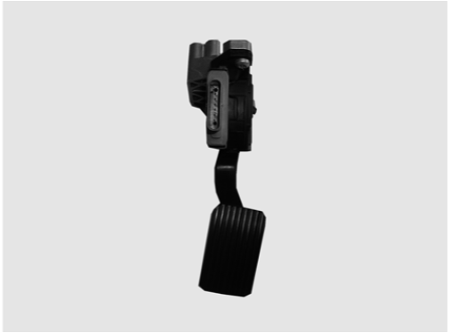
Existe uma mola de aço no pedal do acelerador para produzir as forças do pedal do acelerador. O aviso de retorno sobre a posição do pedal do acelerador é realizado através de dois sensores Hall que trabalham sem contato físico. Os sinais analógicos são convertidos em dois sinais PMV através de dois circuitos eletrônicos. Os sinais PWM emitidos correspondem à posição atual do pedal do acelerador. Os sinais PWM são representados graficamente na tela do MCO-08. Os valores PWM do limites mecânicos são gravados como parâmetros no flash do Power Train Manager (A1124), isto vale para os dois sinais PWM. Sobre a base de PWM1 é normatizada a posição do pedal do acelerador entre os limites mecânicos. Em caso de falha, PWM2 é usado. Se ocorrer uma falha no pedal do acelerador, uma limitação parametrizável de rotação e de momentos é ativada. Entre as posições de marcha lenta e de plena carga e em conexão com a atual rotação do motor, é determinada através do mapa característico do pedal do acelerador, a especificação de momentos para o pedal do acelerador. Os sinais „marcha lenta“ e „Kickdown“ são determinados a partir da posição normatizada do pedal do acelerador. Se a posição do pedal do acelerador for menor que o limite da marcha lenta, a avaliação é marcha lenta = ativa. Acima do limite o momento do pedal do acelerador é emitido. Este alcança no ponto parametrizado de plena carga os 100% (90%). Se o pedal do acelerador for acionado além deste ponto (e se ultrapassar o limite para kickdown), a função kickdown é ativada. Esta função possui uma histerese. A função é desativado no instante que a posição do pedal do acelerador cair abaixo do limite de plena carga. Em conexão com a informação sobre o pedal do acelerador a posição do pedal do acelerador é verificada quanto à plausibilidade. Se a posição do pedal do acelerador estiver acima do ponto da marcha lenta, a posição atual do pedal do acelerador é adotada como valor de marcha lenta. No instante que a posição do pedal do acelerador voltar a cair abaixo deste valor, o valor da marcha lenta volta a ser ajustado até o valor calibrado do flash do Power Train Manager. Para que, por ex. na partida em aclive, também possa ser acionado o pedal do freio, a consulta é realizada apenas quando o pedal do acelerador for acionado antes do pedal do freio. Um registro de diagnose na memória de diagnose do Power Train Manager, porém, somente acontece se por 5 vezes a posição de marcha lenta não for alcançada. Disposição dos pinos dos plugues
Plugue: 8 pinos / Codificação A
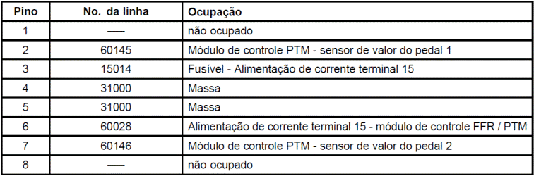 Dados Técnicos Sobretensão: 36V por máx. 1 hora Tensão de teste: 27,6V Tensão nominal: 24V Demanda de corrente em funcionamento: Corrente máxima: < 15mA a 32V Corrente mínima: < 5mA a 10V Todas as entradas e saídas como também as linhas de sinal PWM entre si são protegidas contra curto circuito e inversão de pólos. Faixas de trabalho pedal do acelerador 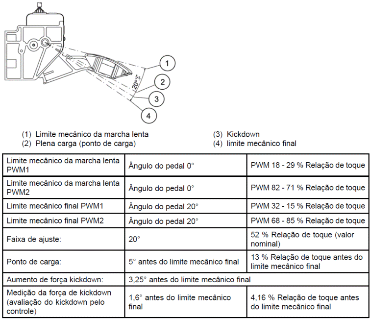
No osciloscópio ficam visíveis a relação de toque e os movimento sem direções opostas dos sinais PWM. Imagem do osciloscópio PWM1  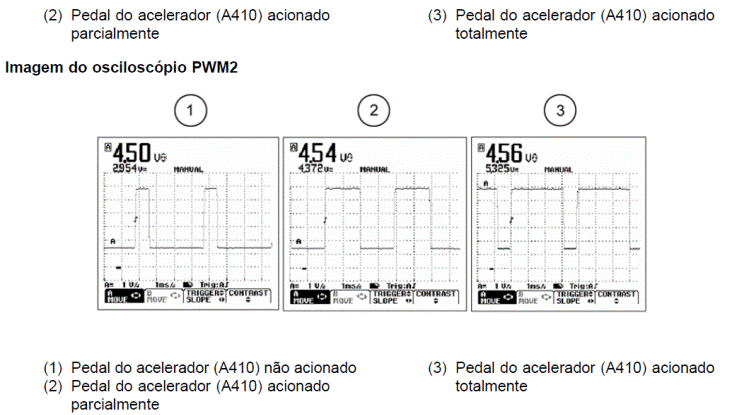
No MCO-08 os sinais PWM1 e PWM2 aparecem sincronizados (veja ilustração).
Pedal da embreagem Teste de função da embreagem A função da embreagem é verificada por meio de MCO-08. No „menu de seleção diagnose PTM“ o item do menu „Teste de função da embreagem“. Na janela „ponto de separação / ponto de arrasto embreagem“ é determinado o ponto de separação ou o ponto de arrasto da embreagem, isto serve para a detecção das causas de ruídos durante as mudanças de marchas. Calibração O sistema precisar estar ventilado para a calibração do curso da embreagem. A calibração ou o ajuste do pedal da embreagem é realizado por meio de MCO-08. Após a seleção do „menu de seleção diagnose PTM“ selecionar o item do menu „Calibração“. Existem duas possibilidades de calibração do pedal da embreagem. – Calibração do pedal da embreagem com substituição do disco – Calibração do pedal da embreagem sem substituição do disco A janela „ajuste pedal da embreagem“ é exibida automaticamente após a seleção „Calibração do pedal da embreagem com substituição do disco“ . Isto serve para determinar os limites mecânicos finais do pedal da embreagem, o qual deve ser pressionado totalmente. Esta posição deve ser mantida por aprox. 3 segundos. Soltar o pedal da embreagem depois. Este processo deve ser repetido duas ou três vezes, até que não se verifiquem mais variações do limite mecânico final. Os valores apurados durante a calibração (mínimo e máximo) devem ser armazenados. Como passo seguinte deve ser desligada a ignição. Os valores são armazenados, e a seguir a ignição é ligada novamente. O pedal da embreagem está calibrado. Embreagem do ventilador com sensor de rotação (A968) A embreagem do ventilador com sensor de rotação (1) trabalha conforme a demanda e previne desta maneira o perigo de superaquecimento do motor.
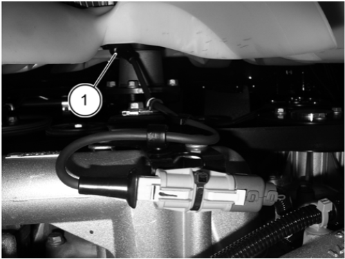
Com o aumento da carga – por ex. em aclives, com reboque – a temperatura aumenta no compartimento do motor e com isto a temperatura do líquido de arrefecimento sofre um aumento significativo. Então a embreagem do ventilador trabalho em alta rotação. O Power Train Manager aciona uma válvula magnética no ventilador por meio de um sinal PWM. O sensor de rotação no ventilador devolve um sinal ao Power Train Manager.
Função: Uma tensão de 24V ativa o magneto, este puxa a contraplaca, a mola da válvula fecha o orifício, a embreagem do ventilador desliga. Zero de tensão desativa o magneto, a contraplaca volta à posição inicial, a mola da válvula abre o orifício, a embreagem do ventilador é ativada. Em conexão com o sinal PWM, um ajuste sem escalonamentos da rotação do ventilador é possível. A rotação do ventilador depende da: – temperatura do líquido de arrefecimento – temperatura externa – temperatura do ar de admissão – retarder secundário ou pritarder
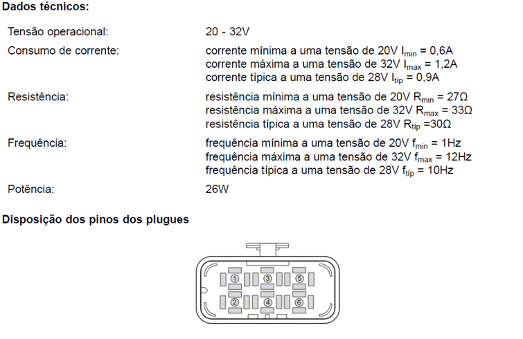 
DESCRIÇÃO DOS COMPONENTES Power Train Manager (A1124) 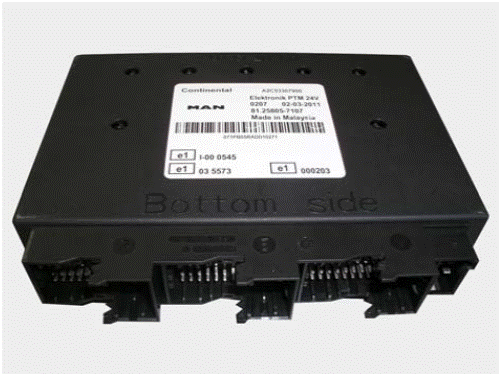
Embreagem do ventilador com sensor de rotação (A968) 
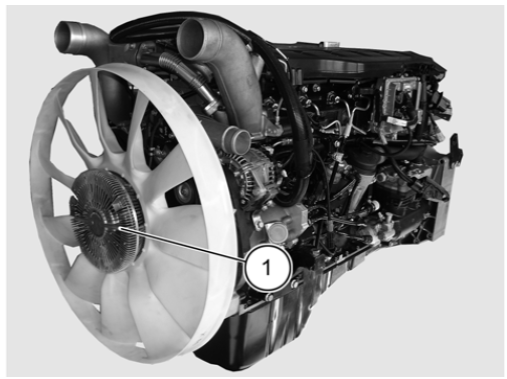 A embreagem do ventilador com sensor de rotação (1) encontra-se no lado dianteiro do motor.
DIAGNOSE Geral A maioria dos módulos que podem ser testados com MCO-08, estão ligados através de uma linha K à tomada de diagnose X200 Pino 3 ou 4. Através da linha K, o sistema de diagnose agita um determinado módulo de controle. Este responde e transmite as falhas arquivadas na memória de diagnose de modo digital através da linha K. Módulos de controle que são contatados via CAN do conjunto propulsor, e que não possuem mais a linha K, como por ex. TBM, ECAS2 ou EBS, são contatados via CAN de diagnose do PTM. O PTM representa aqui uma gateway. Tomada de diagnose HD-OBD (X200) Os códigos de diagnose SPN podem ser lidos por meio de MCO-08 a partir das memórias de diagnose de diversos módulos de controle (conexão pela tomada de diagnose X200) e são exibidos na tela de MCO-08. A tomada de 16 pólos HD-OBD conforme ISO 15031-3 substitui a anterior tomada de diagnose MAN de 12 pólos. HD-OBD é a abreviatura de Heavy Duty-Onboard Diagnose. Heavy Duty representa aqui um sinônimo de veículos comerciais pesados. Esta normatização OBD possibilitará futuramente, em escala mundial para quase todos os veículos, um sistema de diagnose universal para componentes relevantes para emissões.

Tabela de disposição de pinos nos plugues
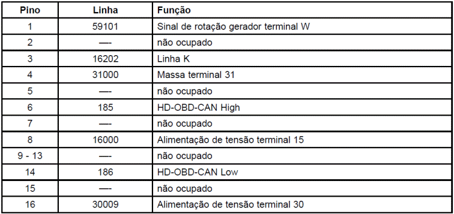
Funções principais da diagnose As principais funções são: – Reconhecimento de falhas – Análise de falhas Ocorrência Importância Identificação Tipo de falha (estática, esporádica,...) – Armazenar falhas – Simulação para busca de falhas Indicações de interferências O módulo eletrônico de controle possui funções próprias de diagnose para todas as saídas e diferentes entradas. As falhas nas entradas e saídas e falhas internas são reconhecidas, analisadas e armazenadas na memória de diagnose do módulo de controle. Adicionalmente, as falhas são exibidas no display da instrumentação e / ou indicadas através da luz central de advertência (H111) em conexão com a luz de controle do sistema correspondente. Nos casos de indicações STOP, adicionalmente a palavra STOP aparece no display e a luz central de advertência (H111) pisca em VERMELHO com intervalos de 1 Hz. A luz central de advertência (H111) acende: – AMARELO significa uma indicação de função ou uma advertência – VERMELHO significa uma interferência A luz vermelha de advertência tem prioridade sobre uma luz amarela de advertência. Uma indicação de função ou uma advertência (AMARELA) sempre é posta de lado em favor de uma indicação de falha (VERMELHA). No caso de um colapso de CAN (instrumentação - computador central de bordo) a luz central de advertência (H111) é acionada em VERMELHO. Todas as indicações atuais de interferências estão disponíveis com a ignição em "ON", (terminal 15), independentemente do estado do veículo. As falhas diagnosticadas e armazenadas no módulo de controle podem causar diferentes riscos, e, por este motivo, cada falha individual recebe uma prioridade. Indicações de status FMI (Failure Mode Identication) 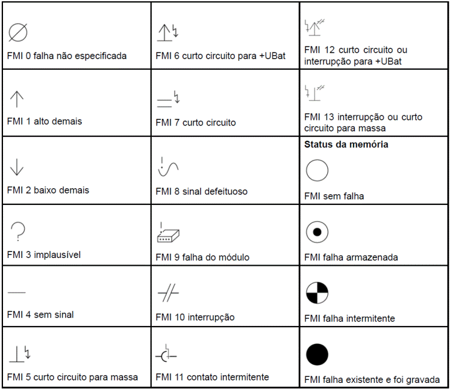 Prioridade na indicação / Posição de software de diagnose R22 e R24
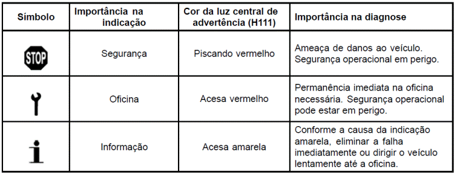
| |||||||||||||||||||||||||